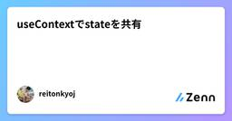
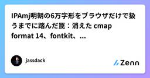
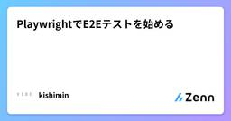
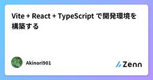
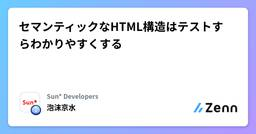
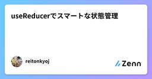
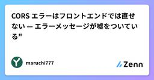
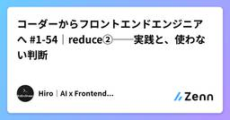
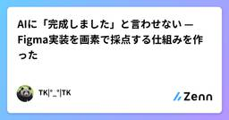
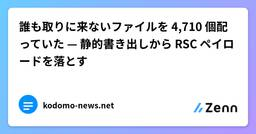

Zennの「frontend」のフィード
フィード

useContextでstateを共有
Zennの「frontend」のフィード
useContextを勉強してみた前前回ではuseReducerを使って状態・状態更新の切り出しを行なった。そして前回ではカスタムhookを使ってtsx内の関数を別ファイルに切り出した。しかし、新しい問題が生じた。カスタムhookでもtsxでも別のstateをそれぞれ参照していること。今回は全コンポーネントで一つのstateを共有することで解決する。 前回やったこと カスタムhookでtsx内の関数を切り出すことに成功// ./App.tsximport { useTodo } from './useTodo';import { type Initial } from...
11時間前

カスタムhookで処理を切り出す
Zennの「frontend」のフィード
※ 前回投稿したuserReducer の続編です。https://zenn.dev/reitonkyoj/articles/21a2b8a3c24fdf カスタムhookを勉強してみた前回useReducerを使って状態・状態更新の管理を切り出すことに成功しました。しかし、大元のtsxファイルにはいまだに関数が残っています。本来tsxファイルはtsxをreturnする関数を定義するファイルです。なので、残った関数を別ファイルに切り出してしまいましょう。 前回までやったこと reducer.tsを作成して、状態・状態更新を切り出すことに成功//./reducer.ts...
11時間前

IPAmj明朝の6万字形をブラウザだけで扱うまでに踏んだ罠：消えた cmap format 14、fontkit、多重露光
Zennの「frontend」のフィード
IPAmj明朝の異体字（IVS）を、ブラウザだけで検索・比較・コピーし、PNG や SVG に書き出せる静的 Web ツールを作りました。本稿は、その実装で踏んだ罠の記録です。https://github.com/photoguild-ITteam/mj-variant-finder!異体字をめぐる3本の記事「髙」「邉」をコピペしたら普通の字に戻る問題：なぜ化けるのか、どう使えばいいのか（一般向け）IPAmj明朝の6万字形をブラウザだけで扱うまでに踏んだ罠：ツールの実装（技術者向け・この記事）名前の漢字を飼い慣らす150年：戸籍・JIS・Unicode の技術史（補稿...
13時間前

Goとhtmxの組み合わせが人気な理由を、評判・実装・実測から整理してみた
Zennの「frontend」のフィード
「最近、Go と htmx の組み合わせをよく見る気がするけど、あれって本当に良いの？」そんな疑問を持ったことはないでしょうか。自分も最初は「HTML に hx-get や hx-post を書くだけで、そんなに開発体験が変わるの？」くらいに思っていました。ところが、調べてみると、この組み合わせが刺さる理由はかなりはっきりしています。今では、フロントエンドを作るときは脳死で Go＋htmx にするまで至りました。ざっくり言うと、Go はサーバー側で HTML を生成・配信しやすく、htmx は返ってきた HTML をブラウザ上で部分的に差し替えるのが得意です。SPA のような操作感...
18時間前

PlaywrightでE2Eテストを始める
Zennの「frontend」のフィード
なぜ調べたかWebアプリケーションのE2Eテストを行うため、Playwrightの基本的な使い方を調べました。今回は、テストの実行方法やテストコードの書き方から、コード生成、スクリーンショット、動画撮影、ビジュアルリグレッションテスト、Page Object Modelまでをまとめます。 学んだこと E2EテストとはE2EテストはEnd-to-End Testingの略で、一般的にシステムの一連の動作を最終チェックするテストのことです。出典：［入門］Webフロントエンド E2E テスト（技術評論社） PlaywrightとはPlaywright公式ドキュメ...
1日前

Vite + React + TypeScript で開発環境を構築する
Zennの「frontend」のフィード
Vite + React + TypeScript で開発環境を構築する 概要React のフロントエンド開発をこれから始めるとき、ビルドツールに Vite を選ぶのは今や標準的な選択肢です。かつて主流だった Create React App（CRA）は開発体制が縮小し、公式ドキュメントでも新規プロジェクトには Vite などのモダンなツールを推奨する流れになりました。本記事では、Vite + React + TypeScript の開発環境をゼロから構築し、実際の開発で困らないところ（パスエイリアス、環境変数、ESLint / Prettier、本番ビルド）まで一通り整える...
1日前

セマンティックなHTML構造はテストすらわかりやすくする
Zennの「frontend」のフィード
テストはどのようにわかりやすくあるべきかテストは、テスト名を読まなくてもテスト本文だけで何を保証しているかがわかるのが理想であると考えられます。テストを実装する関数の第一引数には、基本的にはそのテストが何をテストするのかを書きます。要するに、コードの外側に置いた説明で、コメントと同じ性質を持ちます。テスト名とテスト本文の関係は、次の3段階に分けられます。段階テスト名に書くものテスト本文だけで読み取れることテスト名を書き換えるときテスト名の例Bad実装内容クラス名で探した要素への操作実装を変えたとき.btn-primary をクリックすると...
2日前

useReducerでスマートな状態管理
Zennの「frontend」のフィード
useReducerを勉強してみたフルスタックのアプリ開発だと避けて通れないapi通信。api通信をするということはclientのfetchが増える。そしてfetchをした際に返ってくるデータをset関数を使ってstatsを更新する記述も増えていく。そうすると一つのコンポーネントが煩雑になってしまいがちである。そこでusereducerを使う。 useReducerは状態管理を別ファイルでまとめるための便利機能fetchを使ったデータ操作でもなければ、dbを操作するためのクエリでもないです。純粋に状態管理をまとめるだけです。もっというと、set関数を使わないでstateを管...
2日前

ブラウザでだけ細い部分が消える — 背景削除ツールの切り抜き精度を上げるまで
Zennの「frontend」のフィード
ブラウザだけで動く背景削除ツール Kirinukuma（https://kirinukuma.uekibachidan.com/）について書いている記事の後編。前編(https://zenn.dev/uekibachidan/articles/9c3964401b7f8b)では、209MBのAIモデルをCloudflareの無料枠で配るところまでを書いた。こちらは、動くようになったあとに出てくるマスクの話になる。最初に使うつもりだったモデルの限界に対して、回避策や手直しの機能をいくつも足した。そのあとモデルを替えたら、足したもののだいたいが要らなくなった。途中の検証は差し替え前の...
2日前

CORS エラーはフロントエンドでは直せない — エラーメッセージが嘘をついている"
Zennの「frontend」のフィード
Access to fetch at 'https://api.example.com/orders' from origin'https://app.example.com' has been blocked by CORS policy:No 'Access-Control-Allow-Origin' header is present on the requested resource.この文章が、たぶん一番誤解されています。読むとこう見えます。fetch が失敗した。フロントエンドの問題だ。どちらも違います。fetch は成功しています。 サーバーは受け取って...
2日前

モデル選択の「auto」に任せてはいけないのは、合格判定だ
Zennの「frontend」のフィード
フォームを実装するときも、READMEの一文を直すときも、モデル選択をautoにする。同じ設定で困らないように見える。でもフォームはビルドが通っても、エラー表示が消えたり、キーボードで送信できなかったりする。一方、文書の修正にそこまでの検証は要らない。両者を分けるのはモデル名ではない。「この仕事は何を満たしたら終わりか」だ。選択を自動化する前に、合格条件を仕事ごとに決めておきたい。 tierは品質保証ではないGitHub Copilotのauto model selectionにはefficiency、balance、intelligenceという選好tierがある。利用可能なモ...
2日前

コーダーからフロントエンドエンジニアへ #1-54｜reduce②──実践と、使わない判断
Zennの「frontend」のフィード
はじめに前回（#1-53）は reduce の基本を扱いました。累積値（バケツ）と初期値を用意して、1周ごとに「バケツの新しい中身」を return する。合計・最大値・平均といった数値を作る reduce でした。今回は、その続きです。テーマは2つあります。実践：数値ではなく、オブジェクトを組み立てる reduce（個数の集計）使わない判断：reduce で書けるけれど、書かないほうがいい場面の見分け方前回の最後に「累積値は数値でなくてもいい」と書きました。ここが reduce の強みであり、同時に「読めないコード」が生まれやすい場所でもあります。Claude ...
2日前
ブラウザだけでLinux・Docker・AWS・Cisco機器を学べる「疑似ターミナル」の設計思想
Zennの「frontend」のフィード
この記事についてプロ道(prodou.net) という、ブラウザだけでLinux・Docker・AWS・Cisco・BIG-IPなどのインフラ操作を学べる無料学習サイトを個人開発しています。この記事では「なぜサーバー実行型ではなく疑似ターミナル型にしたのか」という技術的な設計判断を掘り下げます。!本記事はプロ道の紹介を兼ねた技術解説記事です。実装の詳細な内部コードは省略し、設計思想を中心に書いています。 前提:インフラ学習の環境構築は鬼門Cisco機器やBIG-IPのようなネットワーク/インフラ製品は、学習用に以下のような選択肢があります。方式例課題...
2日前

「暗すぎる」を CIELAB ΔE で測ったら、原因は明度ではなかった
Zennの「frontend」のフィード
Three.js の低ポリシーンで、Night パレットが3本のプロトタイプを通して「暗すぎる」と診断され続け、明度を上げても直りませんでした。CIELAB ΔE で測ったら原因は明度ではなく色どうしの距離で、3つに分解できました。この記事は、測定の実装（TypeScript 約30行）、4パレットの実測値、閾値をテストに落とす書き方、そして測ったのに誤診した失敗を書きます。 前提作っているのは、オレンジの球が小さな世界を旅するポートフォリオサイトです。Three.js 0.184 / React Three Fiber 9 / TypeScript 5.7 / Vitest ...
3日前

バックエンド・フロントエンド・モバイルを分けるマルチプラットフォーム開発
Zennの「frontend」のフィード
はじめにWebとモバイルの両方を提供するプロダクトでは、画面を作るだけでなく、API、認証、データ管理、ストアへの配信など、複数の領域を同時に扱います。すべてを同じ考え方で実装すると責務の境界が曖昧になり、仕様変更の影響範囲も把握しにくくなります。そこで、バックエンド、Webフロントエンド、モバイルを分け、APIを境界として連携する構成を考えます。この記事では、各領域の責務、API契約、リポジトリ構成、テスト、リリースまで、開発を進めるうえで必要になる考え方を一通り紹介します。 対象読者Webとモバイルの両方を開発するチームバックエンドとクライアントの責務分担を検討して...
3日前

Reactのカスタムフック設計パターン集
Zennの「frontend」のフィード
Reactのカスタムフック設計パターン集 概要Reactのカスタムフックは「ロジックの再利用」を実現する仕組みですが、書き方を誤ると「ただ関数に切り出しただけ」で終わってしまい、かえって見通しが悪くなることもあります。本記事では、入門者が最初に押さえておきたいカスタムフックの設計パターンを、実装例とともに整理します。対象は「useStateとuseEffectは書けるが、自作フックの設計に自信がない」というレベルの方です。 カスタムフックの基本カスタムフックは、useで始まる名前を持つ、内部でReactのフックを呼ぶただの関数です。import { useState,...
4日前

AIに「完成しました」と言わせない — Figma実装を画素で採点する仕組みを作った
Zennの「frontend」のフィード
AIエージェントにFigmaのデザインを実装させると、かなりの精度で形になります。ただ、最後に必ず同じことが起きました。AIが「実装できました」と言い、私が並べて見ると合っていないのです。原因は能力ではなく、合否を誰が持つかでした。完成を判定しているのがAI自身だからです。そこで判定だけをAIから取り上げるハーネスを作り、実案件で回しました。その実測を書きます。なお案件名は伏せ、案件A・案件Bと書きます。ツール自体は社内利用のため非公開です。 結論先に3点だけ書きます。AIに完成を自己申告させない。 合否は決定論的な画像比較が独占し、AIはdoneを出せません。正はF...
4日前

誰も取りに来ないファイルを 4,710 個配っていた — 静的書き出しから RSC ペイロードを落とす
Zennの「frontend」のフィード
こんにちは。小学生向けのニュースサイト、こどもニュースをつくっています。公開サイトは Next.js を output: 'export' で静的に書き出して、Cloudflare Pages に置いています。記事は毎日増えるので、出力のファイル数も毎日増えます。デプロイのファイル数が上限に近づいてきたので中身を数えたら、6,025 ファイルのうち 4,710 ファイルが、誰も取りに来ないファイルでした。何だったのかと、どう落としたかを書きます。 症状 — 上限まで 7 か月Cloudflare Pages の無料プランには、1 回のデプロイあたり 20,000 ファイルという...
4日前

Next.js vs TanStack Start の違いを10項目で検証してみた 4
4
Zennの「frontend」のフィード
はじめにこの記事では、Next.js と TanStack Start を、実際にコードを書きながら 10項目 で比較検証します。Next.jsは、Vercel社が開発し、App Router / RSCといった特徴を持つReactフレームワークです。一方TanStack Start は TanStack Router と Vite をベースにしたフルスタック React フレームワークです。結論を先に書くと、エコシステムが成熟・高パフォーマンス・安定運用を重視するならNext.js型の一貫性・デプロイ先の自由度を重視するならTanStack Startという分類に...
4日前

題材別サムネイルテンプレートを状態設計する
Zennの「frontend」のフィード
題材別サムネイルテンプレートを状態設計するこれは公開UIを観察して作る設計メモであり、内部実装やモデル性能を推測する記事ではない。URLや画像を入力し、題材と変更内容を説明し、テンプレートや比率を選び、候補を比較する。この一連の操作を、単なる生成ボタンではなくレビュー可能な状態として捉える。 題材が違えば入力責務も違うYouTube Thumbnail Templatesのようなワークフローでは、参照画像、主役、文字、ムード、レイアウトが同じ画面に現れる。しかし、ミームの問い、ホラーゲームの脅威、社会派ストーリーの関係は同じフィールドでは表せない。type Brief =...
5日前